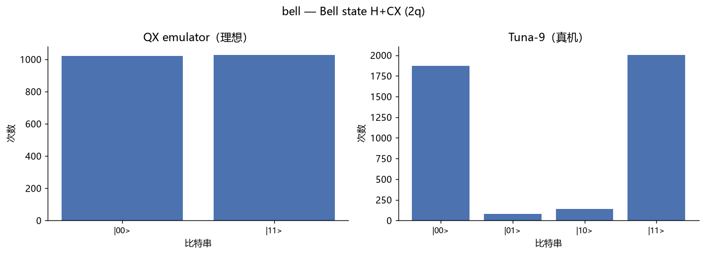
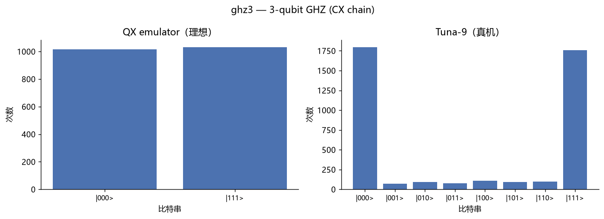
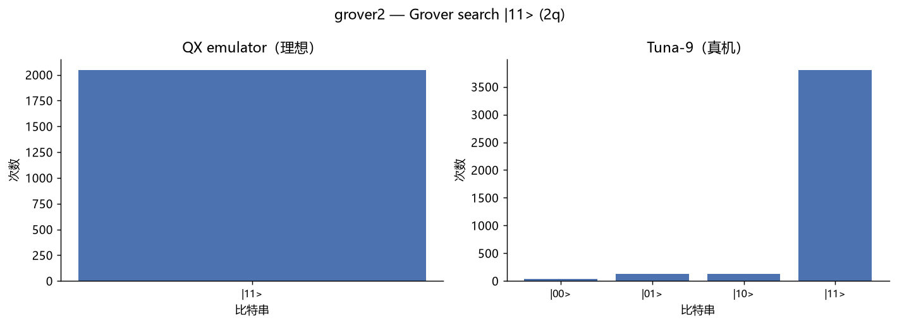
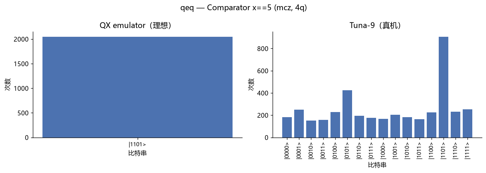
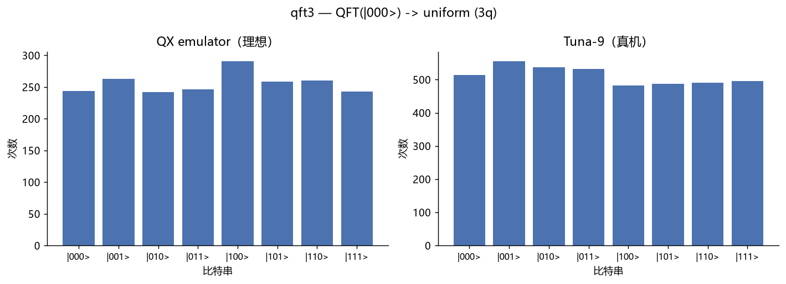
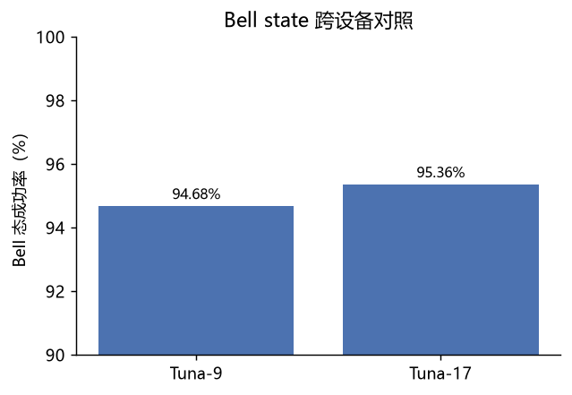
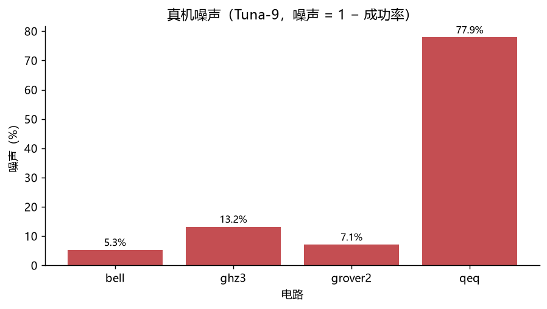
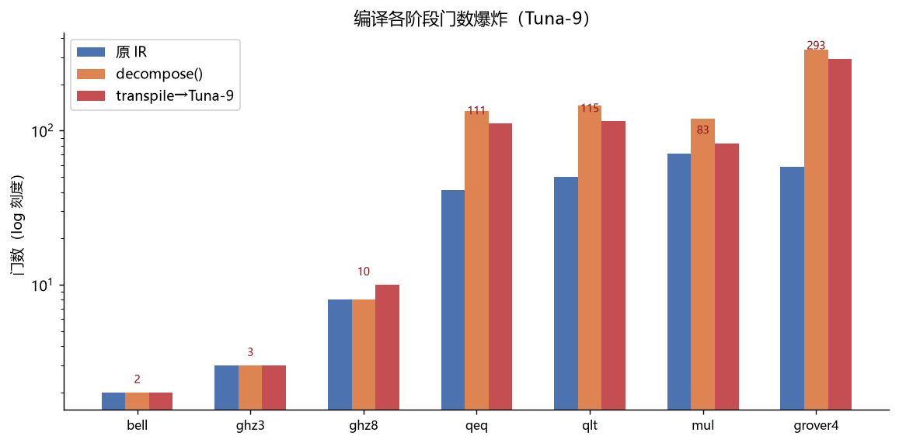
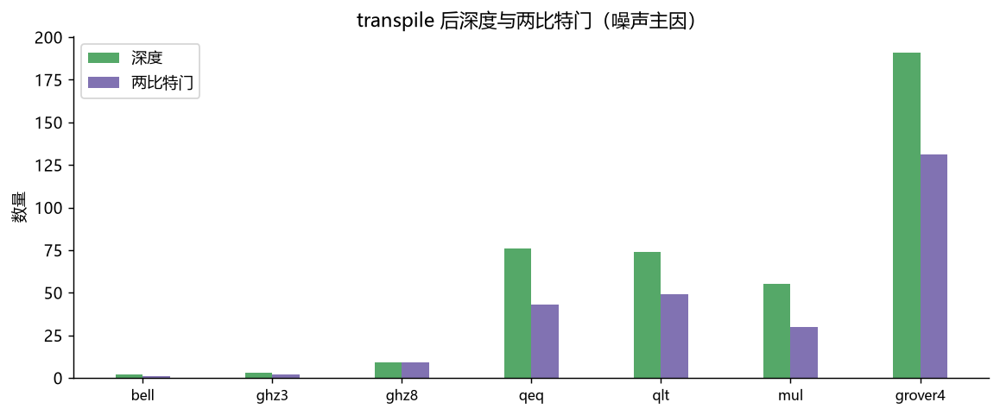
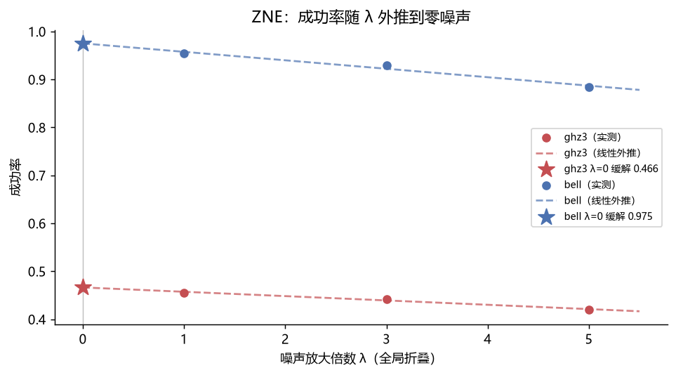

| 项目 | 内容 |
|---|---|
| 报告日期 | 2026-08-16 |
| 报告版本 | v1.0 |
| 被测对象 | QuoNic 量子编程 DSL（F:\PyQQQ） |
| 测试执行 | 自动化（Claude 编排） + 用户监督 |
| 数据产物 | matrix_local.json、matrix_qx.json、qi_hardware.json |
本次测试按「本地多后端 → 云端模拟器 → 真实硬件」三层递进，验证 QuoNic 的 算法库、后端抽象与硬件编译链路的正确性与一致性。核心结论：
cif/cwhile）因
后端能力差异正确降级为 NotImplementedError，无一静默错误。qi 的编译链路（transpile + SWAP 路由 + 门分解）；| 层 | 对象 | 用例数 | 产出 |
|---|---|---|---|
| L1 | 本地 4 后端矩阵 | 14 | matrix_local.json |
| L2 | QX emulator 云端编译链路 | 9 | matrix_qx.json |
| L3 | 真机 Tuna-9 / Tuna-17 噪声基准 | 6 | qi_hardware.json |
| 环境 | Python | qiskit | 关键依赖 |
|---|---|---|---|
本地 .venv |
3.13.14 | 2.5.2 | qiskit-aer 0.17.2、cirq-core 1.7.0、pennylane 0.45.1 |
硬件 .venv-qi |
3.13.14 | 2.3.1 | qiskit-quantuminspire 0.18.2、quantuminspire 4.0.0 |
说明：
qiskit-quantuminspire 0.18.x要求qiskit<2.4.0，与主环境的 2.5.2 冲突，故硬件链路使用独立虚拟环境.venv-qi（qiskit 降级至 2.3.1）。
| 后端 | 类型 | 量子比特 | 备注 |
|---|---|---|---|
| qiskit（Aer） | 本地模拟器 | — | statevector / density_matrix |
| cirq | 本地模拟器 | — | — |
| pennylane | 本地模拟器 | — | — |
| native | QuoNic 内置模拟器 | — | 唯一支持 cwhile |
| QX emulator | 云端模拟器 | 10 | max_shots=2048，提交前验证 |
| Tuna-9 | 超导真机 | 9 | max_shots=131072，默认真机 |
| Tuna-17 | 超导真机 | 17 | max_shots=131072 |
已登录 Quantum Inspire（member ID 2989），token 存于
~/.quantuminspire/config.json。原 Starmon-5 已下线，由 Tuna 系列接替。
get_backend(b).run(circuit, shots) 在
四个后端各跑一次，归一化 Result 后比较 top-3 计数分布或标量值。QuantumInspireBackend("QX emulator") 跑 9 个代表性
电路，覆盖基础门、多控制 Z 分解、QFT 加法、SWAP 路由。success = Σ_{s ∈ 目标态} count(s) / 总样本，理想值 1.0；noise = 理想成功率 − 真机成功率（success 类）；TVD = ½ Σ |p_i − 1/N|（uniform 类，衡量与均匀分布的距离）；= 真机 TVD − 理想 TVD。注：QX emulator 的
max_shots=2048，请求 4096 时实际返回 2048； Tuna-9 / Tuna-17 按请求返回 4096。成功率与 TVD 均为归一化指标， 不受 shot 数差异影响，但 TVD 的采样噪声地板约为 1/√N（2048 shots ≈ 2.2%）。
| 用例 | 说明 | qiskit | cirq | pennylane | native | 结论 |
|---|---|---|---|---|---|---|
| bell | Bell H+CX | ✓ | ✓ | ✓ | ✓ | 一致 |
| ghz3 | 3-qubit GHZ | ✓ | ✓ | ✓ | ✓ | 一致 |
| qft3 | 3-qubit QFT | ✓ | ✓ | ✓ | ✓ | 一致 |
| grover2 | 搜索 |11> | ✓ | ✓ | ✓ | ✓ | 一致 |
| grover4 | 搜索 |1111>（mcz） | ✓ 96.9% | ✓ 95.7% | ✓ 95.9% | ✓ 96.6% | 一致 |
| qpe_pi | 相位 π（3-bit） | ✓ 1010:100% | ✓ | ✓ | ✓ | 一致 |
| counting | 量子计数 N=8,M=4 | ✓ 4.0 | ✓ | ✓ | ✓ | 一致 |
| shor15 | Shor 分解 15 | ✓ 3.0 | ✓ | ✓ | ✓ | 一致 |
| qeq | 比较器 x==5 | ✓ 1101:100% | ✓ | ✓ | ✓ | 一致 |
| qlt | 比较器 x<5 | ✓ 10010:100% | ✓ | ✓ | ✓ | 一致 |
| mul | 5×3 mod 8 | ✓ 111101:100% | ✓ | ✓ | ✓ | 一致 |
| qif | 相干 if | ✓ | ✓ | ✓ | ✓ | 一致 |
| cif | 经典 if（中段测量） | ✓ 11:100% | ✗ N/I | ✗ N/I | ✓ 11:100% | 降级正确 |
| cwhile | 经典 while（RUS） | ✗ N/I | ✗ N/I | ✗ N/I | ✓ 1:100% | 降级正确 |
✓ = 结果正确且跨后端一致；✗ N/I = 抛
NotImplementedError（后端能力不足的 显式降级，非静默失败）。
小结：12/14 用例四后端完全一致；cif 仅 qiskit/native 支持（cirq/pennylane
不支持中段测量反馈）；cwhile 仅 native 支持（RUS 循环需要逐 shot 动态回读）。
所有能力缺口均为显式异常，无静默错误。
| 用例 | 说明 | top 计数 | 编译要点 |
|---|---|---|---|
| bell | Bell H+CX | 00:50.1% / 11:49.9% | 基础门 |
| ghz3 | 3-qubit GHZ | 000:50.4% / 111:49.6% | CX 链 |
| ghz8 | 8-qubit GHZ（星形） | 00000000:49.0% / 11111111:51.0% | SWAP 路由 |
| qft3 | 3-qubit QFT | 000:27.0% / 111:21.6% / 100:20.3% | controlled Rz |
| grover4 | Grover |1111>（4q） | 1111:96.3% | mcz 分解 |
| qeq | 比较器 x==5 | 1101:100% | mcz 分解 |
| qlt | 比较器 x<5 | 10010:100% | QFT 加法 |
| mul | 5×3 mod 8 | 111101:100% | QFT 加法 |
| qif | 相干 if | 00:51.3% / 11:48.7% | cp/rz 分解 |
小结：9/9 通过。ghz8 证明非相邻 qubit 的星形连接能由 transpile 自动 SWAP 路由；grover4/qeq 证明多控制 Z 能在云端正确分解；qlt/mul 证明 QFT 加法器 （controlled Rz）链路完整。
| 用例 | 比特数 | 理想（QX） | 真机（Tuna-9） | 噪声 |
|---|---|---|---|---|
| bell | 2 | 1.0000 | 0.9468 | 5.3% |
| grover2 | 2 | 1.0000 | 0.9292 | 7.1% |
| ghz3 | 3 | 1.0000 | 0.8684 | 13.2% |
| qeq | 4 | 1.0000 | 0.2212 | 77.9% |
| qft3（uniform） | 3 | TVD 0.0239 | TVD 0.0222 | ΔTVD −0.0017 |
| bell17（Tuna-17） | 2 | — | 0.9536 | — |





Bell 跨设备对照（2-qubit，目标态 {00, 11}）：
| 设备 | 成功率 | 主要噪声来源 |
|---|---|---|
| Tuna-9 | 94.68% | 读取噪声 5.3%（01:2.0% / 10:3.3%） |
| Tuna-17 | 95.36% | 读取噪声 4.6%（01:3.4% / 10:1.2%） |

以「噪声 = 1 − 真机成功率」衡量，噪声与电路深度强相关：
| 电路 | 比特数 | 深度（估算） | 噪声 |
|---|---|---|---|
| bell | 2 | H + CX ≈ 2 层 | 5.3% |
| grover2 | 2 | H + CZ + H ≈ 4 层 | 7.1% |
| ghz3 | 3 | H + 2×CX ≈ 3 层 | 13.2% |
| qeq | 4 | mcz 分解 + SWAP ≈ 数十层 | 77.9% |

观察：
qeq（4-qubit 比较器）在 transpile 后因多控制 Z 分解 + SWAP 路由叠加，
电路深度远超相干时间，成功率跌至 22.1%（几乎等于 1/16 均匀分布中
偶然命中的量级），说明深度多控制电路已超出当前 NISQ 硬件可用范围。qft3 的 TVD 在理想（0.0239）与真机（0.0222）之间几乎无差异，且都落在
采样噪声地板（2048 shots ≈ 2.2%）附近，说明 3-qubit QFT 的相位保真度
尚不能与采样噪声区分开，需更大 shot 数或量子态层析才能进一步分辨。针对 §7 中「深度电路噪声爆炸」的观察，对 7 个代表性电路做三阶段资源估算：
原 IR 门数 → decompose()（BASIC_GATES 分解）→ transpile（Tuna-9 原生门 +
SWAP 路由），量化「电路怎么炸的」。
| 电路 | 说明 | 原 IR | decompose | transpile | 两比特门 | 深度 |
|---|---|---|---|---|---|---|
| bell | Bell (2q) | 2 | 2 | 2 | 1 | 2 |
| ghz3 | GHZ (3q) | 3 | 3 | 3 | 2 | 3 |
| ghz8 | GHZ 星形 (8q) | 8 | 8 | 10 | 9 | 9 |
| qeq | 比较器 x==5 (mcz) | 41 | 135 | 111 | 43 | 76 |
| qlt | 比较器 x<5 (QFT) | 50 | 146 | 115 | 49 | 74 |
| mul | 乘法 5×3 (QFT) | 71 | 119 | 83 | 30 | 55 |
| grover4 | Grover |1111> (mcz) | 58 | 334 | 293 | 131 | 191 |


观察：
针对 §7 测出的 13.2%（ghz3）与 77.9%（qeq）噪声，用经典 ZNE 尝试「拉升」真机 成功率，形成完整的「测-评-修」闭环。
方法：全局 unitary folding + 线性外推。
L 折叠为 L (L† L)^k，噪声放大档 λ = 2k+1（k=0/1/2 → λ=1/3/5）；transpile(optimization_level=0, initial_layout=物理比特) 后跑 Tuna-9
（opt=0 避免优化器把 C†C 抵消掉）；p(λ) 对 λ 做最小二乘线性拟合，外推到 λ=0 得缓解值 p(0)。结果：
| 电路 | λ=1 | λ=3 | λ=5 | 外推 λ=0 | 相对 λ=1 拉升 |
|---|---|---|---|---|---|
| ghz3 | 45.58% | 44.24% | 41.97% | 46.64% | +1.06pp (+1.1%) |
| bell | 95.41% | 92.94% | 88.35% | 97.53% | +2.12pp (+2.1%) |

解读：
工程细节：Tuna-9 耦合图无 (1,2) 边，3-qubit 链 0-1-2 落在物理 0-1-3，故 QI 返回 4-bit 计数键；脚本用
physical_qubits把物理比特串映射回逻辑比特串。
综合判定：QuoNic 已具备「本地模拟 + 云端模拟器验证 + 真实硬件执行」的 完整三层能力，第一轮硬件适配目标达成。
按三类原因界定当前「不能测」的项：
| 类别 | 项 | 原因 |
|---|---|---|
| 物理资源限制 | Shor（大 N）、Grover（大 n）、QPE（高精度） | 所需量子比特数 / 电路深度超出 9–17 qubit 设备与相干时间 |
| 执行模型不匹配 | cif、cwhile |
超导真机无中段测量 + 实时经典反馈，属经典控制结构，需 native/qiskit 模拟 |
| 工程能力缺口 | VQE、QAOA | 需 session 模式 / 参数化电路循环提交，qi 后端尚未接入 |
其他技术限制：
max_shots=2048（请求更多会被截断）；真机 max_shots=131072。noise= 注入（抛 ValueError）；仅支持静态电路 + 末端测量。cif/cwhile 在 qi 后端会抛 NotImplementedError（_check_supported 显式拦截）。| 文件 | 内容 |
|---|---|
matrix_local.json |
L1 本地 4 后端矩阵结构化结果 |
matrix_qx.json |
L2 QX emulator 云端编译链路结果 |
qi_hardware.json |
L3 真机噪声基准（含完整计数直方图） |
resource_estimation.json |
资源估算三阶段门数对比（7 用例） |
zne_mitigation.json |
ZNE 噪声缓解结果（λ=1/3/5 线性外推） |
docs/figures/*.png |
本报告内嵌图表（由 plot_*.py 生成） |
复现命令：
.venv/Scripts/python.exe scripts/backend_matrix.py # L1 本地矩阵
.venv-qi/Scripts/python.exe scripts/qi_matrix.py # L2 QX emulator
.venv-qi/Scripts/python.exe scripts/qi_hardware.py # L3 真机噪声基准
.venv/Scripts/python.exe scripts/resource_estimation.py # 资源估算
.venv-qi/Scripts/python.exe scripts/zne_mitigation.py # ZNE 错误缓解
.venv/Scripts/python.exe scripts/plot_report.py # 直方图（用 QuoNic viz）
.venv/Scripts/python.exe scripts/plot_resource.py # 资源爆炸图
.venv/Scripts/python.exe scripts/plot_zne.py # ZNE 外推图